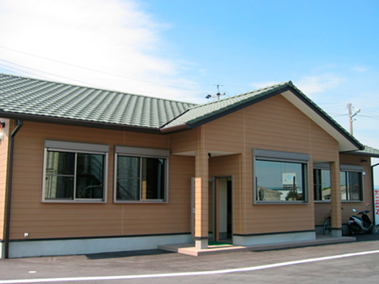

ABOUT SEISHU
会社情報
1955年設立。三重・菰野を拠点に。
勢州運輸有限会社は、三重県三重郡菰野町の運送会社です。住宅の外壁材や屋根材など、住まいづくりに関わる部材の輸送を行っています。

COMPANY PROFILE
会社概要
- 商号
- 勢州運輸有限会社
- 代表者
- 佐藤 寿哉
- 設立
- 1955年（昭和30年）2月8日
- 資本金
- 4,500万円
- 本社所在地
- 〒510-1251
三重県三重郡菰野町大字千草5278-2 - 電話番号
- 059-391-0222
- FAX番号
- 059-393-5345
- 主な輸送品目
- 外壁材、屋根材、住宅関連部材
- 主な輸送方面
- 三重県・愛知県・岐阜県・大阪府・栃木県・茨城県・埼玉県
- 法人番号
- 7190002020698
ACCESS
本社へのアクセス
CONTACT
建材輸送のご相談はこちら
荷物の種類、配送先、ご希望の日時をお聞かせください。